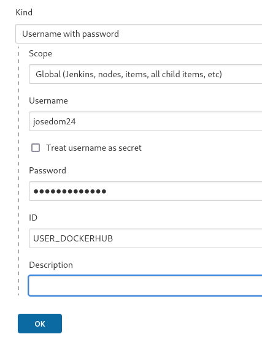
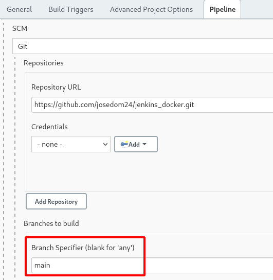

Creación, testeo y publicación de imágenes docker desde Jenkins
El plugin Docker que instalamos en un ejemplo anterior, además de posibilitar correr nuestros pipelines en contenedores docker, nos ofrece la posibilidad de trabajar con docker: crear imágenes, probarlas, publicarlas en un registro,…
En este apartado vamos a crear un pipeline, que va a realizar la siguientes tareas:
- Va a clonar un repositorio donde tenemos un
Dockerfile. - Va a construir la imagen.
- Va a hacer un pequeño test: va a crear un contenedor y va a comprobar que tiene apache2 instalado.
- Va a subir la imagen a DockerHub.
- Y finalmente, va a borrar la imagen generada.
El repositorio donde se encuentra el Dockerfile y el Jenkinsfile es https://github.com/josedom24/jenkins_docker.
Credenciales para subir la imagen a DockerHub
Hemos creado unas credenciales del tipo usuario - contraseña:

Pipeline
Una cosa al indicar que lea el pipeline de un Jenkinsfile es que por defecto lo va buscar en la rama master. En los nuevos repositorios hay que cambiarla por main:

El fichero Jenkinsfile tiene el siguiente contenido:
pipeline {
environment {
IMAGEN = "josedom24/myapp"
USUARIO = 'USER_DOCKERHUB'
}
agent any
stages {
stage('Clone') {
steps {
git branch: "main", url: 'https://github.com/josedom24/jenkins_docker.git'
}
}
stage('Build') {
steps {
script {
newApp = docker.build "$IMAGEN:$BUILD_NUMBER"
}
}
}
stage('Test') {
steps {
script {
docker.image("$IMAGEN:$BUILD_NUMBER").inside('-u root') {
sh 'apache2ctl -v'
}
}
}
}
stage('Deploy') {
steps {
script {
docker.withRegistry( '', USUARIO ) {
newApp.push()
}
}
}
}
stage('Clean Up') {
steps {
sh "docker rmi $IMAGEN:$BUILD_NUMBER"
}
}
}
}
Algunas cosas a tener en cuenta:
- Al clonar el repositorio hemos indicado la rama.
agent any: Este pipeline se ejecuta en el nodo principal.USUARIO = 'USER_DOCKERHUB', las credenciales del tipo username/pasword se leen de esta forma.
Índice
- Instalación de Jenkins en docker
- Introducción a los Pipelines de Jenkins
- Instalación de docker como runner de Jenkins
- Creación, testeo y publicación de imágenes docker desde Jenkins
- Ejecución de un pipeline en varios runner